Project Journal:
Milestone 1:
For my web portal, I will be implementing a simple and clear design. The webpage
will follow the material design standards and will be implemented
using "materialize" framework.
For desktop and laptop visualization, there will always be a left navigation bar, displaying the different webpages accessible from the portal.
Therefore, the different sections of the portal (project journal, class labs and projects) will all be different html webpages that can be accessed from the profile page.
The profile page will consist on scrollable content where different information about me will be displayed (introduction, education, hobbys, experience, abilities...).
Regarding the different interface for tablets and phones, the navigation bar will be hidden by default, with a button to display it when pressed by the user.
The rest of the elements will adapt in size for the smaller displays.
The colors used will be light blues, grey and white.
For desktop and laptop visualization, there will always be a left navigation bar, displaying the different webpages accessible from the portal.
Therefore, the different sections of the portal (project journal, class labs and projects) will all be different html webpages that can be accessed from the profile page.
The profile page will consist on scrollable content where different information about me will be displayed (introduction, education, hobbys, experience, abilities...).
Regarding the different interface for tablets and phones, the navigation bar will be hidden by default, with a button to display it when pressed by the user.
The rest of the elements will adapt in size for the smaller displays.
The colors used will be light blues, grey and white.
Milestone 2:
Regarding the creation of the portal, I did have a rought time creating the portal. Because I was so busy with other courses too, I had little time to include everything
I wanted to have on my portal.
My first step was to put a title, my profile picture, and some simple text on the html page. That was easy to implement and it did not take me a lot of time.
After that, I added the left side navigation bar with the different sections and pages of the portal. This took me a lot of time, since sidebars are hidden by default, and I wanted to have it there at all times. Also, because of the sidebar, I also had to move the text and content in the page to the right side, in order to be in the middle, and no overflown by the navigation bar. It also took some time to set the icons with the links inside the navigation bar.
Then, I added the footer, which did not take me too much time since I used a simple one with just some links in it.
After this, I decided it was a good idea to present my personal information in hoverable cards, which are a "Materialize" framework element; and also, I added an iframe containing a video a made.
After having all this, I proceeded to make the page responsive, which I thought it was gonna be very straight-forward, since the framework I'm using does really good on adapting content to different devices. However, my idea was to hide the left navigation bar on mobile phones, and replace it with a menu button that would display it. This was probably the hardest part. I kept trying to reajust, make a section on my css code for the smaller screen displays, but nothing seemed to work. I was finally able to implement it by having a separate but similar navigation bar that would only show up when targeted by the menu button on phones.
Then, my next step was going to center all the text and content for mobile phone screens, as in this case, the content is not "moved" to the right because the navigation bar is hidden by default, so there is a lot more screen space. I tried everything I could, but the default css code "Materialize" has really gave me a hard time and I could not change it in any of the ways.
To end, I put my code through the HTML and CSS validator, which also had a negative effect on my code, since I had to change my navigation bar content, on which I had a (div -> a) section, which I had to change to (ul -> li -> a), and I also had to change my "<icon>" by "<i>" that made my CSS code change and, again because of the "Materialize" default set up and values, I could not change to make the elements on the navigation bar have the right size, and make the icon hover to white color.
My first step was to put a title, my profile picture, and some simple text on the html page. That was easy to implement and it did not take me a lot of time.
After that, I added the left side navigation bar with the different sections and pages of the portal. This took me a lot of time, since sidebars are hidden by default, and I wanted to have it there at all times. Also, because of the sidebar, I also had to move the text and content in the page to the right side, in order to be in the middle, and no overflown by the navigation bar. It also took some time to set the icons with the links inside the navigation bar.
Then, I added the footer, which did not take me too much time since I used a simple one with just some links in it.
After this, I decided it was a good idea to present my personal information in hoverable cards, which are a "Materialize" framework element; and also, I added an iframe containing a video a made.
After having all this, I proceeded to make the page responsive, which I thought it was gonna be very straight-forward, since the framework I'm using does really good on adapting content to different devices. However, my idea was to hide the left navigation bar on mobile phones, and replace it with a menu button that would display it. This was probably the hardest part. I kept trying to reajust, make a section on my css code for the smaller screen displays, but nothing seemed to work. I was finally able to implement it by having a separate but similar navigation bar that would only show up when targeted by the menu button on phones.
Then, my next step was going to center all the text and content for mobile phone screens, as in this case, the content is not "moved" to the right because the navigation bar is hidden by default, so there is a lot more screen space. I tried everything I could, but the default css code "Materialize" has really gave me a hard time and I could not change it in any of the ways.
To end, I put my code through the HTML and CSS validator, which also had a negative effect on my code, since I had to change my navigation bar content, on which I had a (div -> a) section, which I had to change to (ul -> li -> a), and I also had to change my "<icon>" by "<i>" that made my CSS code change and, again because of the "Materialize" default set up and values, I could not change to make the elements on the navigation bar have the right size, and make the icon hover to white color.
Project 1 milestone 1:
My interactive narrative project is going to be a smartphone review website, where the user will be discover step by step by the characteristics of a new
mobile device. The website will be stating the hardware and software components of the smartphone, as well as all the things it can do, in a very familiar and friendly way,
where the user will be thrilled to see what the page is going to show him after every "revealed" singularity.
The inspiration of this idea comes from my passion for technology, and more concretely, for smartphone devices, which I'm always following up for the latest trends and news, and new releases. With this project, I could combine my passion for computer science and web programming with my passion for mobile devices. I think I can create a webpage, that even if the user has no background or interest for technology, he will still follow the review or reveal until the end, going through each of the steps shown.
A really good example for these type of webpages is what Apple does with their products, where they have a really interactive and good designed page that makes people be interested in their products, showing them all the new functionalities in a very cool way.
Regarding the visuals of the webpage, the "set-up" for most of the "steps" or "slides" when describing the smartphone will be: little text at the left side, big image at the right side, and dark background colors for most cases. The background colors will change for each step, and each step will cover the whole screen of the device. This means that the user will have to scroll down or click on a "down-side" arrow to advance to the next slide, where a new functionality will be shown.
For mobile devices and smaller screens, instead of little text at the left side and an image on the right side; the image will be below the text that will describe it. And also, as in my project journal, there will be a button to display a menu left side navigation bar, displaying all the different link sections of the webpage.
Regarding the technologies for it, I will try to use a lot of Javascript, JQuery, and animations. Also, to make the page look better, I will use "Roboto" font style for the letters, shadows behind the images, and material design standards and icons.
Here we can see two mockups or designs for some of the slides on the website. At the left side, we have the design for mobile devices and smaller screens, and on the right side we have the model for laptops and desktop computers.


The inspiration of this idea comes from my passion for technology, and more concretely, for smartphone devices, which I'm always following up for the latest trends and news, and new releases. With this project, I could combine my passion for computer science and web programming with my passion for mobile devices. I think I can create a webpage, that even if the user has no background or interest for technology, he will still follow the review or reveal until the end, going through each of the steps shown.
A really good example for these type of webpages is what Apple does with their products, where they have a really interactive and good designed page that makes people be interested in their products, showing them all the new functionalities in a very cool way.
Regarding the visuals of the webpage, the "set-up" for most of the "steps" or "slides" when describing the smartphone will be: little text at the left side, big image at the right side, and dark background colors for most cases. The background colors will change for each step, and each step will cover the whole screen of the device. This means that the user will have to scroll down or click on a "down-side" arrow to advance to the next slide, where a new functionality will be shown.
For mobile devices and smaller screens, instead of little text at the left side and an image on the right side; the image will be below the text that will describe it. And also, as in my project journal, there will be a button to display a menu left side navigation bar, displaying all the different link sections of the webpage.
Regarding the technologies for it, I will try to use a lot of Javascript, JQuery, and animations. Also, to make the page look better, I will use "Roboto" font style for the letters, shadows behind the images, and material design standards and icons.
Here we can see two mockups or designs for some of the slides on the website. At the left side, we have the design for mobile devices and smaller screens, and on the right side we have the model for laptops and desktop computers.
Project 1 milestone 2:
For the second milestone of Project 1, I am providing some mockups that describe the interface of the website. As we can see, the review website is divided in different
slides that cover all the hight of the screen. The user can scroll through the content, or click on the arrow icon that is located at the down part of each slide.
To improve the interactivity, and to produce a cool effect on the user, the images will scroll a little through the screen while the user scrolls down the page for the next slide. Also, I will be hiding and showing some of them, when the user loads one of the screens, making use of Javascript and JQuery. There will be some animations for them as well, when they appear or they hide, which are obviously not showed on the mockup pictures.
Then, at the top side, we can see the navigation bar that will be maintained through the whole website. At the left side, the "Android" symbol or the "AndroidTech" title will take the user to the homepage when clicked. Also, at the right side, "Reviews" and "Contacts" will be two different links that will take the user to different sections of the webpage (I will probably not implement them).
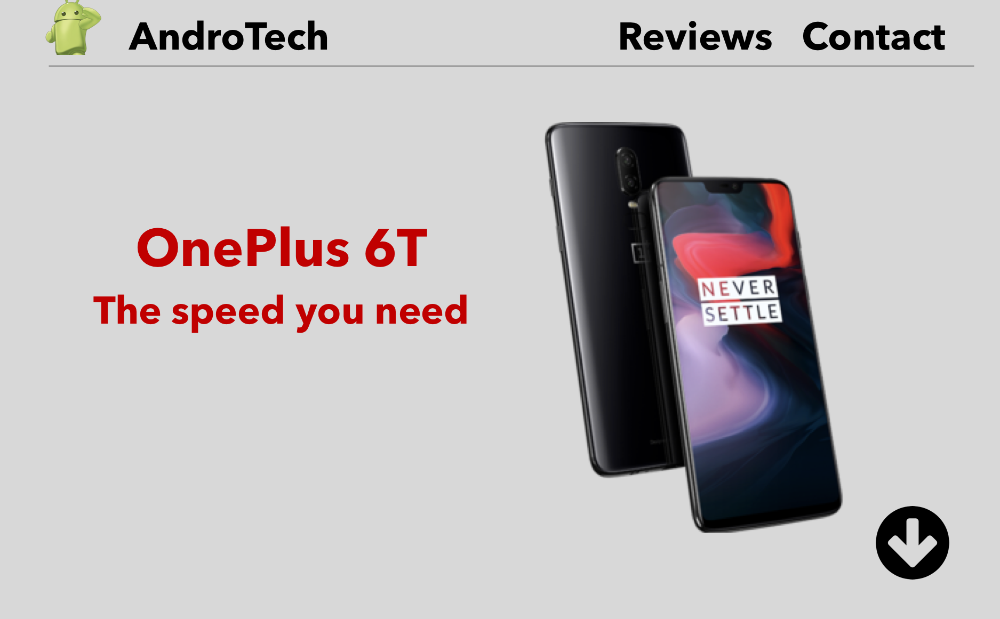 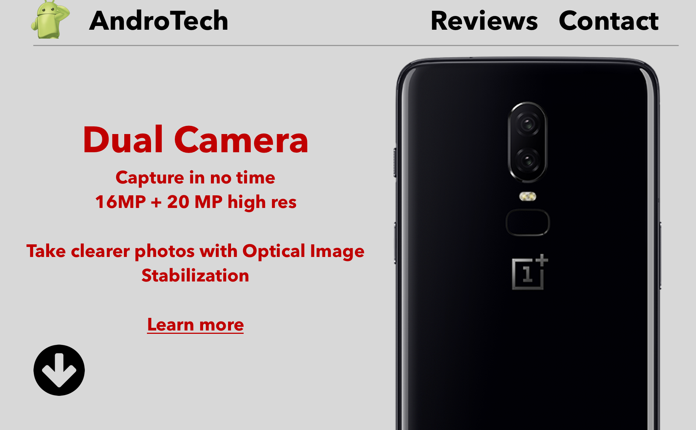 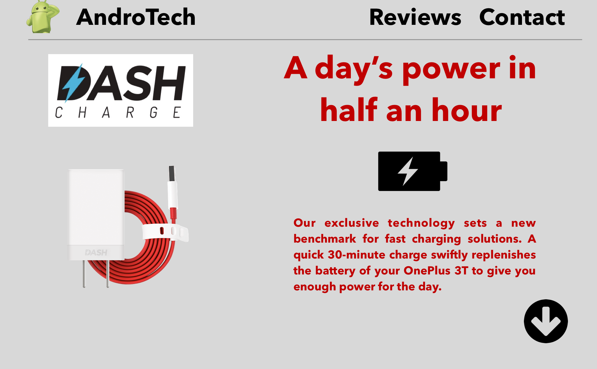 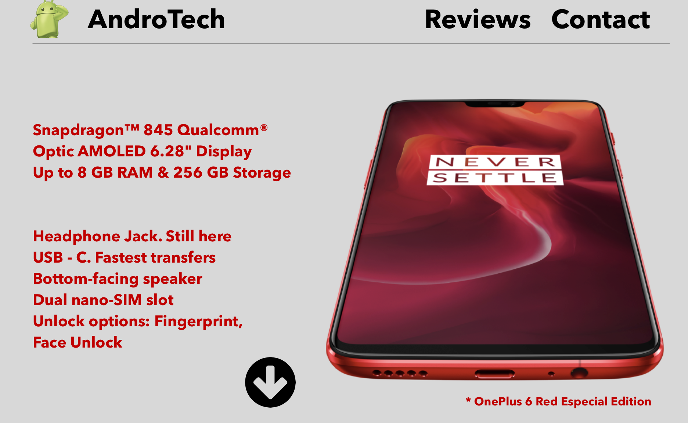
To improve the interactivity, and to produce a cool effect on the user, the images will scroll a little through the screen while the user scrolls down the page for the next slide. Also, I will be hiding and showing some of them, when the user loads one of the screens, making use of Javascript and JQuery. There will be some animations for them as well, when they appear or they hide, which are obviously not showed on the mockup pictures.
Then, at the top side, we can see the navigation bar that will be maintained through the whole website. At the left side, the "Android" symbol or the "AndroidTech" title will take the user to the homepage when clicked. Also, at the right side, "Reviews" and "Contacts" will be two different links that will take the user to different sections of the webpage (I will probably not implement them).
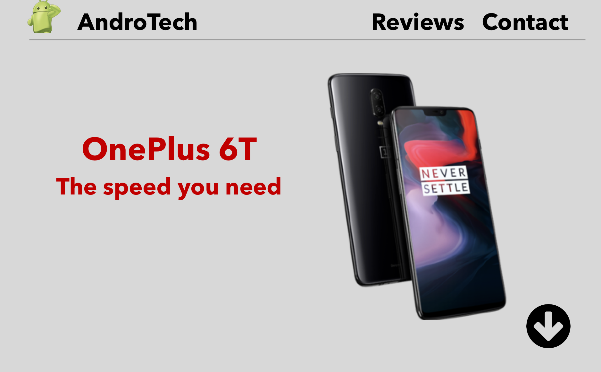 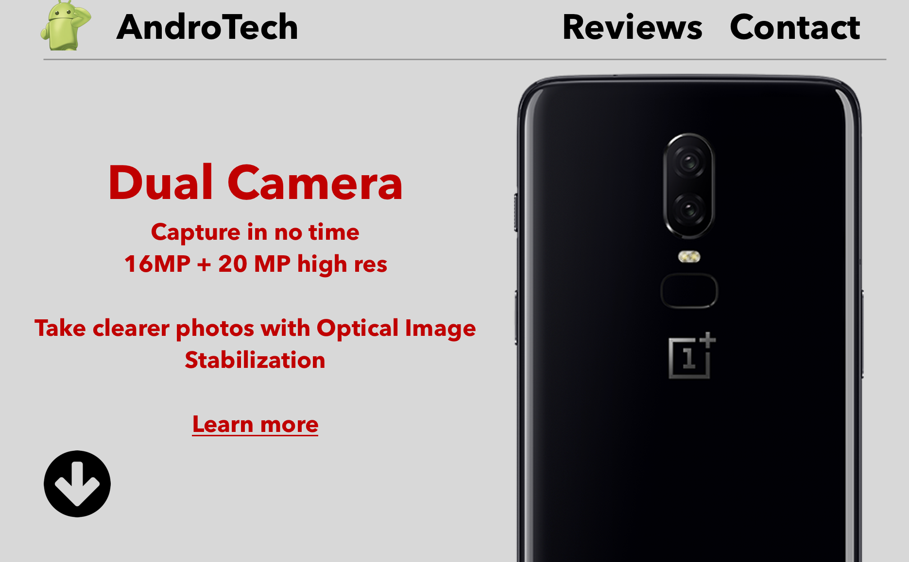 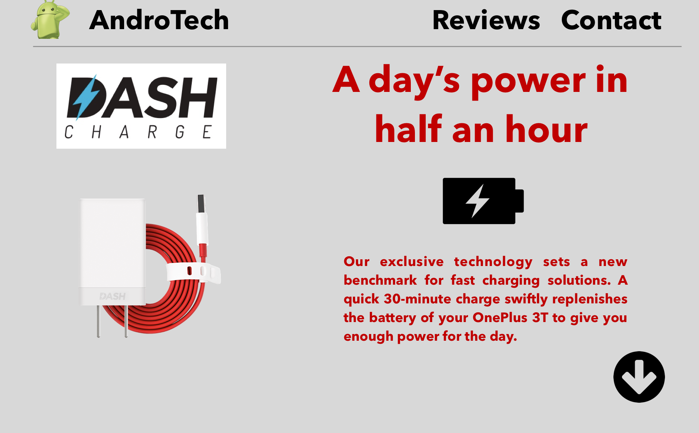 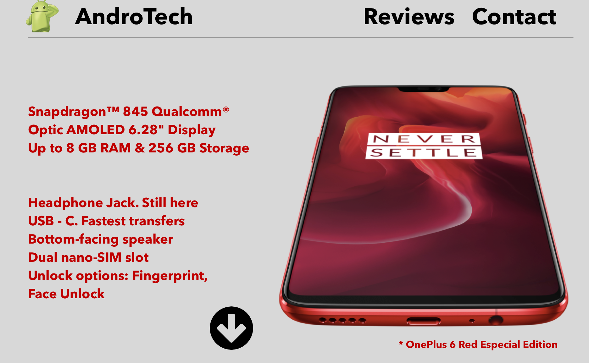
Project 1 milestone 4:
In this first project, which I call "AndroTech", I think I did a good job implementing and translating into code the design I had in the mockups, which is described in Milestone 2.
At first, I thought it was going to take a lot more time, work, and effort, I was not going to able to make it in time, but at the end everything went pretty well and
I was able to achieve the objetive I had set up.
Regarding the thinfs that went well, I think mainly the translation between the mockups and the actual webpage was really good and I didn't find many problems to implement it. There were not many things that I had to change because of coding difficulty. Also, although in Milestone 2 I did not describe the interactivity well, and I did not state any algorithms I would implement to make the webpage interactive and user-friendly; I ended up implementing a lot of animations and effects which made it a lot more interactive and nicer to the user. The "AOS (Animate On Scroll)" library was really useful in order to implement some animations on the different photos of the phone and the texts, while the user was navigating through the content.
Also, because of all the JQuery & Javascript content we have learned during these past weeks (which I didn't have before), I had a lot of ideas of cool effects to set up in the page. For example, the animation on the main page "Scroll down to check it out!" where the text slides into the window after a few seconds; the black arrow icon to navigate between slides; the button to go to the top of the webpage with a simple animation; or the "+" icon to slide down some more specs of the phone.
Then, regarding the things that did not go well, I think there were not many regarding the implementation. First of all, my header navigation bar does not look as good as I expected, which is because I did not have time to place everything where I wanted it using CSS. Also, the main phone image is different than the one in the mockups, since the original one has less quality and when making it big, I would blur too much. And also, I don't know how to use Photoshop, so I couldn't find a better idea than changing the image.
Also, I didn't much time to make the website responsive, and, on bigger screen sizes, there is a weird grey right margin which is not covered by the footer, which shouldn't be there. However, it looks fine on my laptop.
Then, regarding the things I would do differently for next time, the main one would be to work more in the design. I am a CS major, so I've never done real mockups or designs, and I don't know how to use any of the mockup software as "Sketch", "Adobe Ilustrator", "Photoshop", etc. I am also not a creative person, so I find the design part very difficult. And When looking at my classmates projects, I could see most of them put a lot of effort and worked a lot on their designs and made really original websites. So I'll have to work on that for the next projects. Also, my webpage really lacks variety of colors. I would have liked to have each slide of "AndroidTech" in a completely different background color, changing also the font colors and more elements. That would have made it way more attractive than the "boring" grey background I have at the moment.
Regarding the thinfs that went well, I think mainly the translation between the mockups and the actual webpage was really good and I didn't find many problems to implement it. There were not many things that I had to change because of coding difficulty. Also, although in Milestone 2 I did not describe the interactivity well, and I did not state any algorithms I would implement to make the webpage interactive and user-friendly; I ended up implementing a lot of animations and effects which made it a lot more interactive and nicer to the user. The "AOS (Animate On Scroll)" library was really useful in order to implement some animations on the different photos of the phone and the texts, while the user was navigating through the content.
Also, because of all the JQuery & Javascript content we have learned during these past weeks (which I didn't have before), I had a lot of ideas of cool effects to set up in the page. For example, the animation on the main page "Scroll down to check it out!" where the text slides into the window after a few seconds; the black arrow icon to navigate between slides; the button to go to the top of the webpage with a simple animation; or the "+" icon to slide down some more specs of the phone.
Then, regarding the things that did not go well, I think there were not many regarding the implementation. First of all, my header navigation bar does not look as good as I expected, which is because I did not have time to place everything where I wanted it using CSS. Also, the main phone image is different than the one in the mockups, since the original one has less quality and when making it big, I would blur too much. And also, I don't know how to use Photoshop, so I couldn't find a better idea than changing the image.
Also, I didn't much time to make the website responsive, and, on bigger screen sizes, there is a weird grey right margin which is not covered by the footer, which shouldn't be there. However, it looks fine on my laptop.
Then, regarding the things I would do differently for next time, the main one would be to work more in the design. I am a CS major, so I've never done real mockups or designs, and I don't know how to use any of the mockup software as "Sketch", "Adobe Ilustrator", "Photoshop", etc. I am also not a creative person, so I find the design part very difficult. And When looking at my classmates projects, I could see most of them put a lot of effort and worked a lot on their designs and made really original websites. So I'll have to work on that for the next projects. Also, my webpage really lacks variety of colors. I would have liked to have each slide of "AndroidTech" in a completely different background color, changing also the font colors and more elements. That would have made it way more attractive than the "boring" grey background I have at the moment.
Project 2 milestone 1:
For Project 2, I will implement a "blog" page for my Thanksgiving road trip to Canada. It will consist of a guide for every day and every activity we do during the week
we will be there.
The API that will mainly be used is the Google Maps API, which I will use to display some maps of the mentioned places and trips we will do. There will be maps to show a concrete place, or directions from one place to other, or to show a general area.
I will also try to use Firebase to do an interactive database of sugestions and ideas for more places to go during our trip.
So, to start, the main page will consist on a simple interface with the title, the participants of the trip, and a link to send us an email and join us on it. The user will be able to scroll down to the next slide or simply click the arrow icon. I still have not decided the background colors or design for this page.
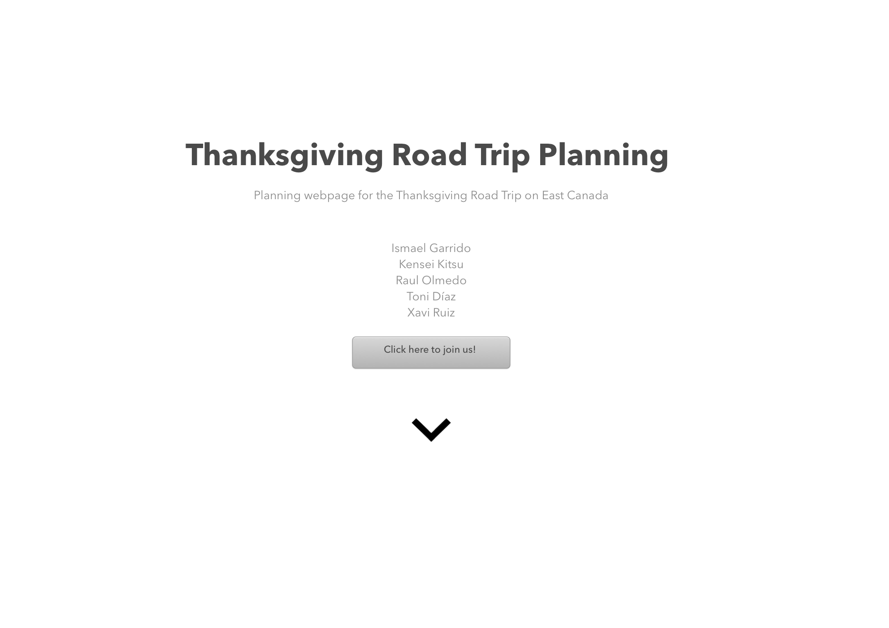 The second page will consist on a description of the first day of the trip. On this page, I plan to have 5 maps. The three first ones will describe the flight or the trip each of the participants do to Detroit, which is our first destination. So then, I will display a "route" on the maps with the Google Maps API. After that, the fourth map will show the trip by car from Detroit to Toronto; and the fifth map will show a tour area of Toronto.
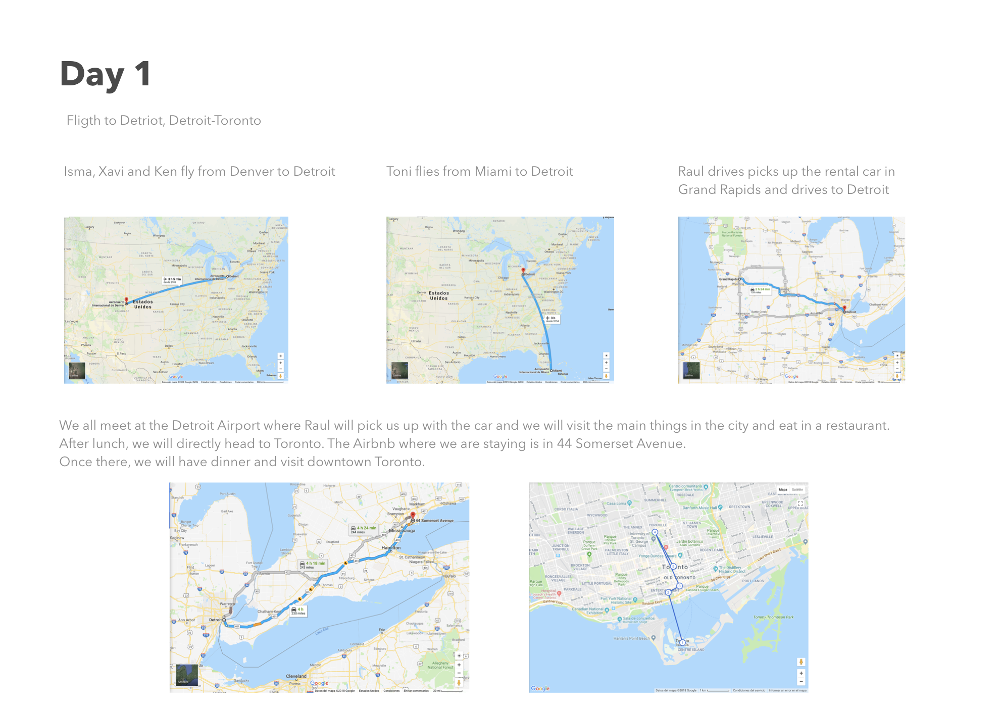 The third page will display the description for day 2 of the trip. It will be simpler than the first one, as this day we stay in Toronto. There will be two main elements: a description of the morning trip to Niagara Falls, along with the map of the car route; and a description of what we will do in the evening, together with a map of an area of Toronto with a marker on Toronto Islands.
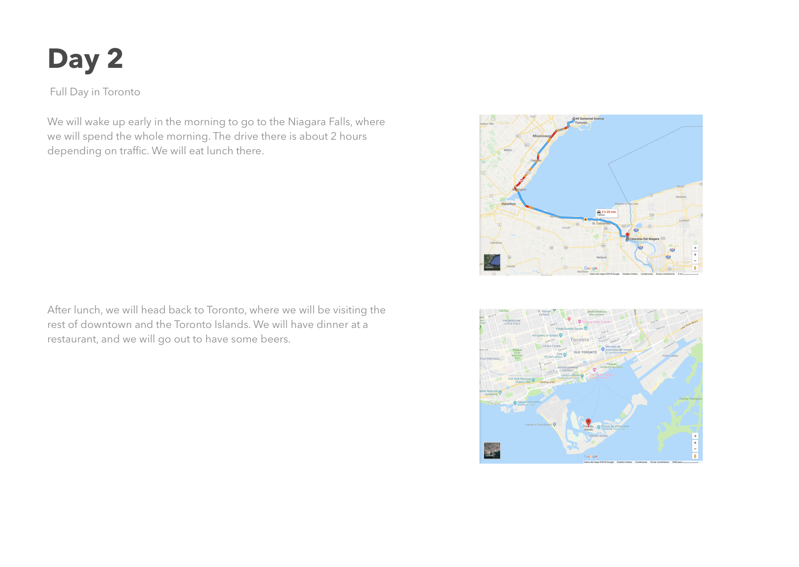
So, as we are doing a 7 day road trip, the ideal plan would be to implement 7 pages similar than the last two described, just talking about and showing the plans and routes for each day. However, I expect to implement at least Day 1 and Day 2, and implement some more if I have enpugh time for it.
After that, I will implement two last pages in the "blog". The first one will be a "Suggestions & Ideas" slide page, where each of the participants will be able to add any plans he would like to do, by selecting the requester, city of the plan, type of plan, and description. The user will be able to send the suggestions by clicking on the "Send Idea" button, which will put the suggestion in a Firebase Database.
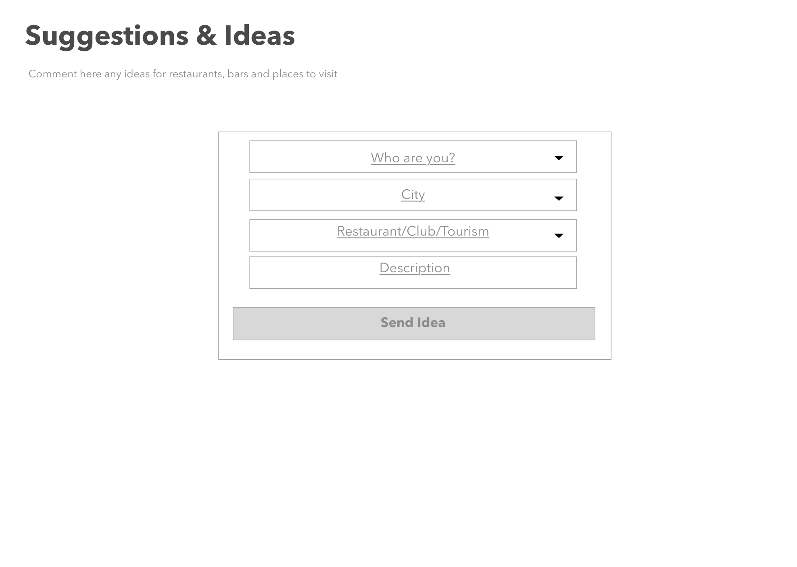 The last page will be used to display the content of that Database, where each of the participants will be able to see all the requests of plans for each of the cities.
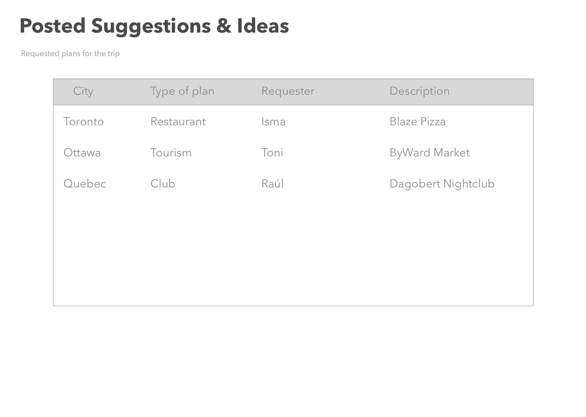
So, the plan is to use the Google Maps API along with Firebase, to store data that the users will input into the page, and then to display it on the "Posted Suggestions & Ideas" page.
The API that will mainly be used is the Google Maps API, which I will use to display some maps of the mentioned places and trips we will do. There will be maps to show a concrete place, or directions from one place to other, or to show a general area.
I will also try to use Firebase to do an interactive database of sugestions and ideas for more places to go during our trip.
So, to start, the main page will consist on a simple interface with the title, the participants of the trip, and a link to send us an email and join us on it. The user will be able to scroll down to the next slide or simply click the arrow icon. I still have not decided the background colors or design for this page.
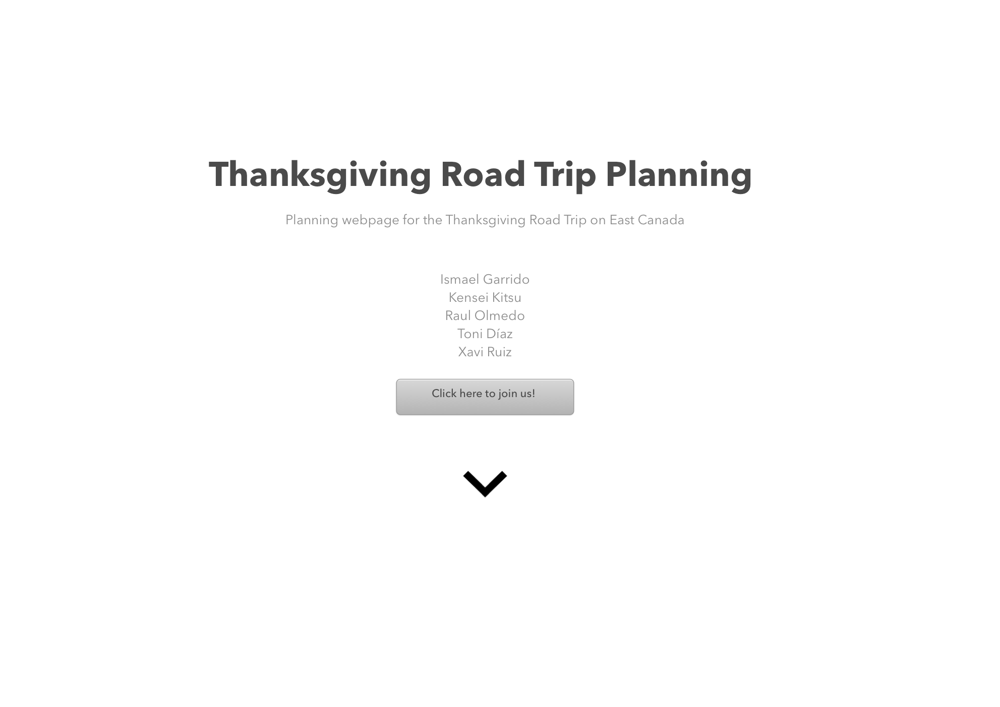 The second page will consist on a description of the first day of the trip. On this page, I plan to have 5 maps. The three first ones will describe the flight or the trip each of the participants do to Detroit, which is our first destination. So then, I will display a "route" on the maps with the Google Maps API. After that, the fourth map will show the trip by car from Detroit to Toronto; and the fifth map will show a tour area of Toronto.
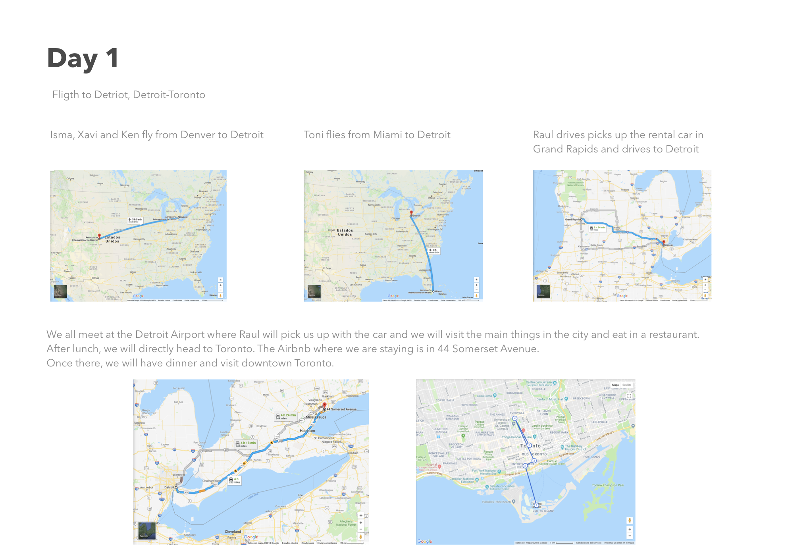 The third page will display the description for day 2 of the trip. It will be simpler than the first one, as this day we stay in Toronto. There will be two main elements: a description of the morning trip to Niagara Falls, along with the map of the car route; and a description of what we will do in the evening, together with a map of an area of Toronto with a marker on Toronto Islands.
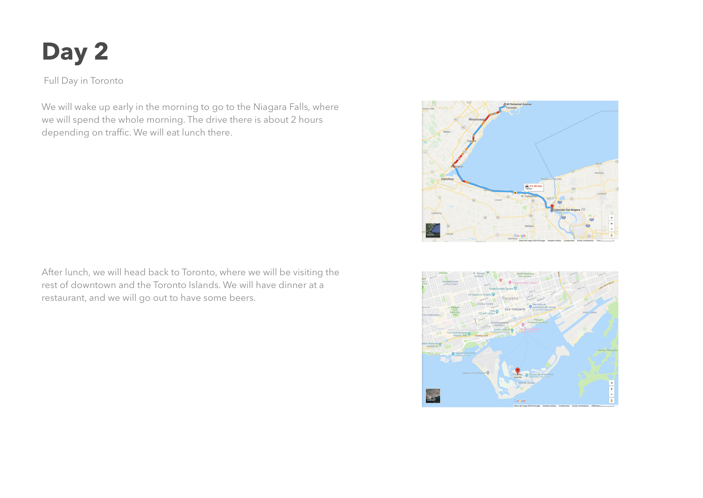
So, as we are doing a 7 day road trip, the ideal plan would be to implement 7 pages similar than the last two described, just talking about and showing the plans and routes for each day. However, I expect to implement at least Day 1 and Day 2, and implement some more if I have enpugh time for it.
After that, I will implement two last pages in the "blog". The first one will be a "Suggestions & Ideas" slide page, where each of the participants will be able to add any plans he would like to do, by selecting the requester, city of the plan, type of plan, and description. The user will be able to send the suggestions by clicking on the "Send Idea" button, which will put the suggestion in a Firebase Database.
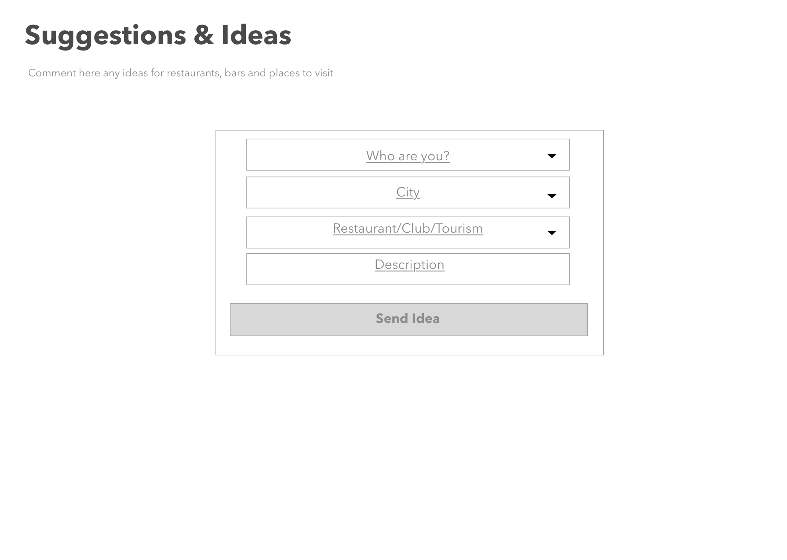 The last page will be used to display the content of that Database, where each of the participants will be able to see all the requests of plans for each of the cities.
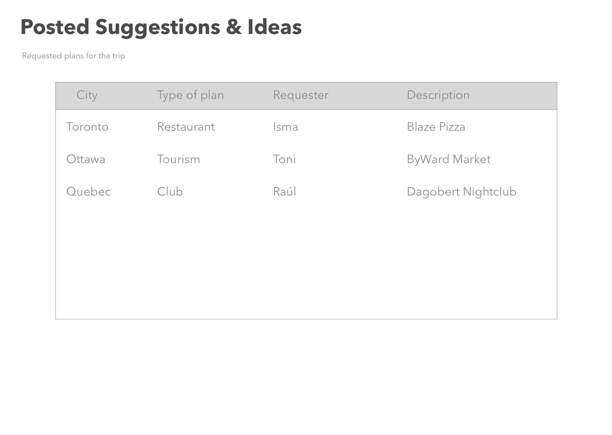
So, the plan is to use the Google Maps API along with Firebase, to store data that the users will input into the page, and then to display it on the "Posted Suggestions & Ideas" page.
Project 2 milestone 2:
For milestone two of this project, I changed some of my thoughts and ideas for the road trip website. First of all, I was suggested by the professor to try to find another APIs to use
for the "plan suggestions" section instead of the Firebase I had. However, I looked at some other alternatives like the TripAdvisor API, and most of this webpages don't give out keys
for research or education, so students can't their APIs. They only give them for big business ideas and projects.
Also, I got some feedback on my project idea from my classmates, and they suggested that doing both Google Maps API and Firebase was going to be too much work. Also, they told me Google Maps API is harder to use than what it look like, so they suggested that I focused on the Firebase "plan suggestions" database that I thought about, which they found really interesting.
For these reasons, at the end, I'm going to first focus on setting up Firebase for the webpage, including authentication, creation of the database, and letting users input data into it, as I initially thought. This will be the main "functionality" of the project. Then, once this is working, I will try to display some maps with the Google Maps API for the first slides of the webpage, but as I said, this will be secondary as I expect to have a lot of work with the Firebase part, which is new to me.
Regarding the Mockups, I will stick with the ones created for Milestone 1. I think they are very detailled and really represent the design I want to implement. The only thing that will change on the design will be the colors of the two last slides, which are the ones I want to focus on. But this is a secondary thing, as the difficult part will be to have the database and suggestion section back-end working.
So, the milestones for the implementation of the project on this week will be:
1) Initial simple interface for the website
1) Webpage connection with Firebase
2) Firebase user authentication (via Google account)
3) Database set-up on Firebase webpage
4) Set up user data input from webpage into the Firebase database
5) Set up display of the database content into the webpage in the last slide
6) Display our Canada trip maps on the "Day X" slides with the Google Maps API
Work done so far: Project 2
Also, I got some feedback on my project idea from my classmates, and they suggested that doing both Google Maps API and Firebase was going to be too much work. Also, they told me Google Maps API is harder to use than what it look like, so they suggested that I focused on the Firebase "plan suggestions" database that I thought about, which they found really interesting.
For these reasons, at the end, I'm going to first focus on setting up Firebase for the webpage, including authentication, creation of the database, and letting users input data into it, as I initially thought. This will be the main "functionality" of the project. Then, once this is working, I will try to display some maps with the Google Maps API for the first slides of the webpage, but as I said, this will be secondary as I expect to have a lot of work with the Firebase part, which is new to me.
Regarding the Mockups, I will stick with the ones created for Milestone 1. I think they are very detailled and really represent the design I want to implement. The only thing that will change on the design will be the colors of the two last slides, which are the ones I want to focus on. But this is a secondary thing, as the difficult part will be to have the database and suggestion section back-end working.
So, the milestones for the implementation of the project on this week will be:
1) Initial simple interface for the website
1) Webpage connection with Firebase
2) Firebase user authentication (via Google account)
3) Database set-up on Firebase webpage
4) Set up user data input from webpage into the Firebase database
5) Set up display of the database content into the webpage in the last slide
6) Display our Canada trip maps on the "Day X" slides with the Google Maps API
Work done so far: Project 2
Project 2 milestone 4:
In this second project, where I implemented the road trip website, I think I did a good job in achieving the milestones that I set as my objective for the project.
I was able to set up the firebase database for the online interactive suggestions; I was able to set up the login by google account on the blog; and I was also able
to display maps with different designs according to the activity on each day.
I am happy with the work achieved since at first I had a hard time being able to set up the database and showing it directly on the website. It was also hard to show the content of the database ordered in tables inside the display.
Also, after having the database ready, I had a hard time setting up the google login, since I didn't realize that it would not work locally, as it had to be hosted in a server. I wasted a lot of time there trying to find out why it wouldn't work, and then a classmate suggested me this, and helped me to set up a local python server to test it.
Then, the last thing to do was displaying the different maps I wanted of the road trip on the blog, which required some research and some learning of the Google Maps API, because I needed to learn how to display a specific area of the globe, how much zoom I wanted on it, and then learn how to draw markers, circles; and display traces and driving routes. I spent a good amount of time on this too, but I didn't have any major problems.
Then, the last major milestone and my biggest problem was to place the maps and direction panels where I wanted them to be (CSS). This was a really big pain, because, first of all, if you put any of the maps inside a div or any other html wrapping, they will suddenly not show and dissapear. They need to be independent elements. So, because of this, I couldn't use of the "Materialize" framework, which I always use and is very helpful with the grid and an easy way to avoid having to deal with most of the CSS.
Also, many of the different CSS elements I tried to use to move the maps didn't work a lot, so it took me a lot of time to place them in the right place of the interface. Because of this, the webpage is not very responsive, and it best viewed in my computer's screen (13″ macbook pro).
Then, regarding the creative side, I wish I had time to implement all the slides corresponding to the 7 days of the trip. On the HTML and Javascript part this would have been easy, as they are very similar pages to the first two ones. The problem is that I would have needed to spend a lot of time on CSS and being able to correctly place another 10/15 maps on the interface.
Apart from this, I know I could have also put sone more effort on the visual design of the slides, background colors, and maybe also the page where all the plans are posted, but I decided to implement a simpler but functional design, because I knew the back-end was going to take me a lot of time and it was the main work to do of this assignment.
I am happy with the work achieved since at first I had a hard time being able to set up the database and showing it directly on the website. It was also hard to show the content of the database ordered in tables inside the display.
Also, after having the database ready, I had a hard time setting up the google login, since I didn't realize that it would not work locally, as it had to be hosted in a server. I wasted a lot of time there trying to find out why it wouldn't work, and then a classmate suggested me this, and helped me to set up a local python server to test it.
Then, the last thing to do was displaying the different maps I wanted of the road trip on the blog, which required some research and some learning of the Google Maps API, because I needed to learn how to display a specific area of the globe, how much zoom I wanted on it, and then learn how to draw markers, circles; and display traces and driving routes. I spent a good amount of time on this too, but I didn't have any major problems.
Then, the last major milestone and my biggest problem was to place the maps and direction panels where I wanted them to be (CSS). This was a really big pain, because, first of all, if you put any of the maps inside a div or any other html wrapping, they will suddenly not show and dissapear. They need to be independent elements. So, because of this, I couldn't use of the "Materialize" framework, which I always use and is very helpful with the grid and an easy way to avoid having to deal with most of the CSS.
Also, many of the different CSS elements I tried to use to move the maps didn't work a lot, so it took me a lot of time to place them in the right place of the interface. Because of this, the webpage is not very responsive, and it best viewed in my computer's screen (13″ macbook pro).
Then, regarding the creative side, I wish I had time to implement all the slides corresponding to the 7 days of the trip. On the HTML and Javascript part this would have been easy, as they are very similar pages to the first two ones. The problem is that I would have needed to spend a lot of time on CSS and being able to correctly place another 10/15 maps on the interface.
Apart from this, I know I could have also put sone more effort on the visual design of the slides, background colors, and maybe also the page where all the plans are posted, but I decided to implement a simpler but functional design, because I knew the back-end was going to take me a lot of time and it was the main work to do of this assignment.